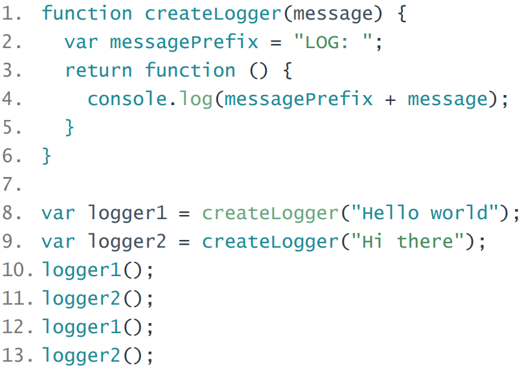

Homework - 4 - task 1
Homework description: link

В начале выполнения данного скрипта нициализируется глобальная область видимости
Ищем ключевые слова "function" и "var"
Создается переменная "createLogger" которой присваивается тело функции "createLogger"
Создаются переменные "logger1" и "logger2" которым присваивается undefined
Далее в строке 8 и 9 происходит присвоение переменным "logger1" и "logger2" функции "createLogger()" с разными параметрами в виде строки.
В строках 10, 11, 12, 13 приисходит почередный вызов функции "logger1()" и "logger2()" которые свою очередь вызывают функцию "createLogger" с разными параметрами.
Далее в строке 1 происходит инициализация функции "createLogger()".
Создается локальная область видимости. Ищем ключевые слова "function" и "var".
Создается переменная "message" и "messagePrefix" в которые записывается undefined.
Далее после фызова этой функции в 10 и 12 строкав в переменную "message" записывается строка "Hello world", а после вызова этой же фунции в в строках 11 и 13 в переменную "message" записывается строка "Hi there".
В строке 2 в переменную "messagePrefix" записывается строка "LOG: "
В строке 3 приисходит возврат анонимной функции без параметров которая в свою очередь выводит в консоль сообщение вида "LOG: Hello world" или "LOG: Hi there" в зависимости от переданных парметров в функцию.
В данномслучае для адекватной работы анонимной функции ей необходима перемення "messagePrefix" и так как есть ссылка на эту анонимную функцию из за этого область видимости функции "createLogger" не удаляется и происходит замыкание.
Результат работы данного кода:
"LOG: Hello world"
"LOG: Hi there"
"LOG: Hello world"
"LOG: Hi there"